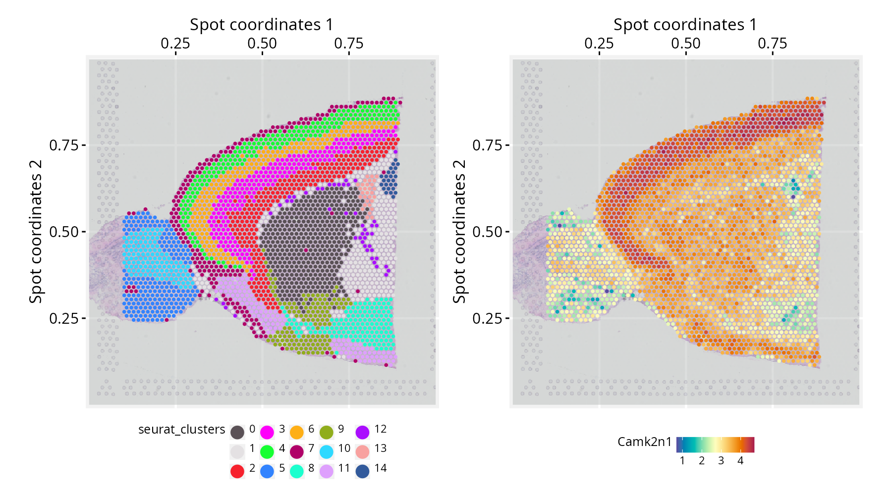
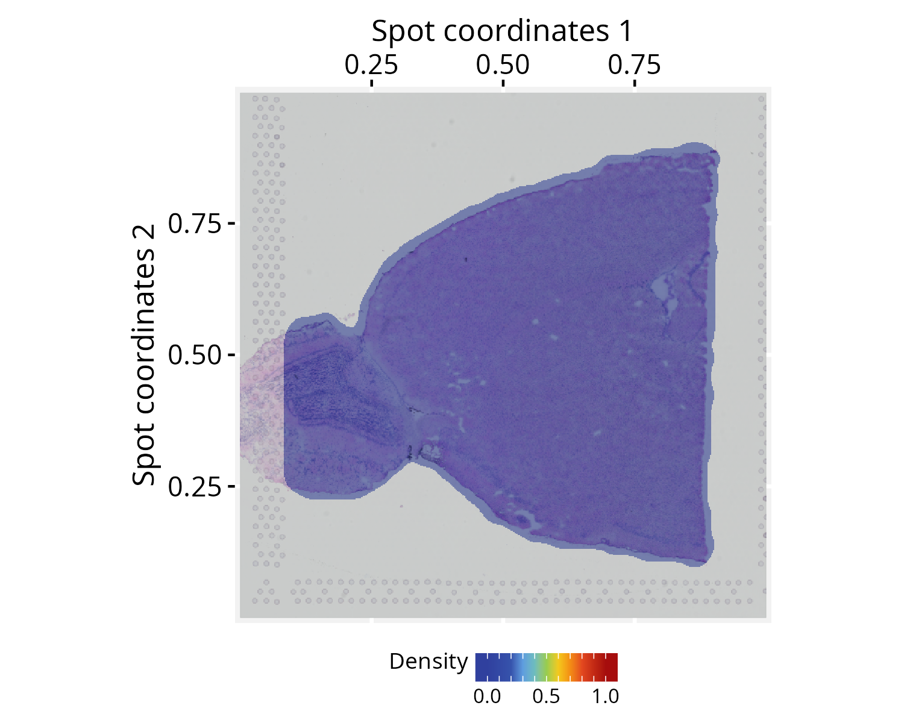
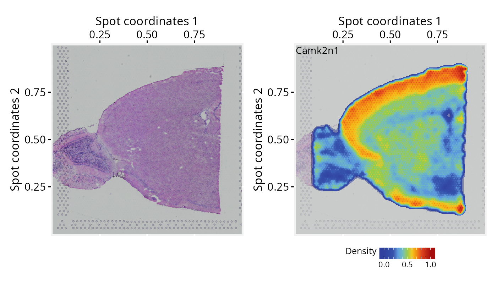
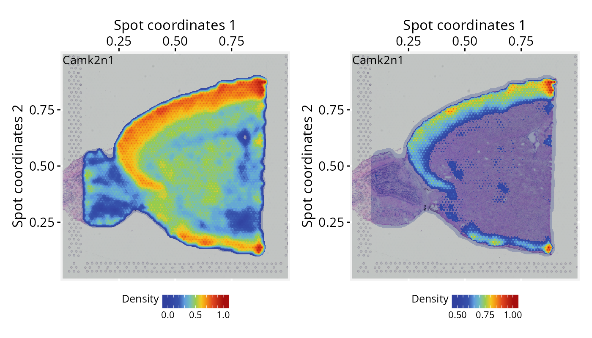
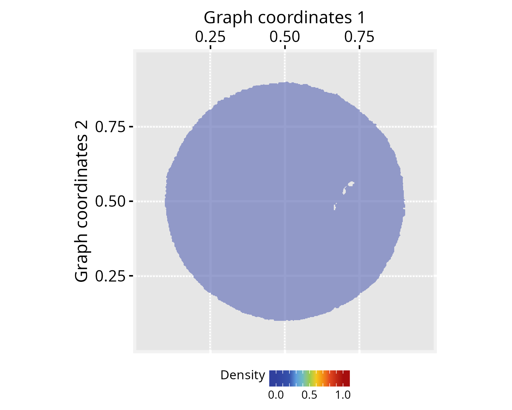
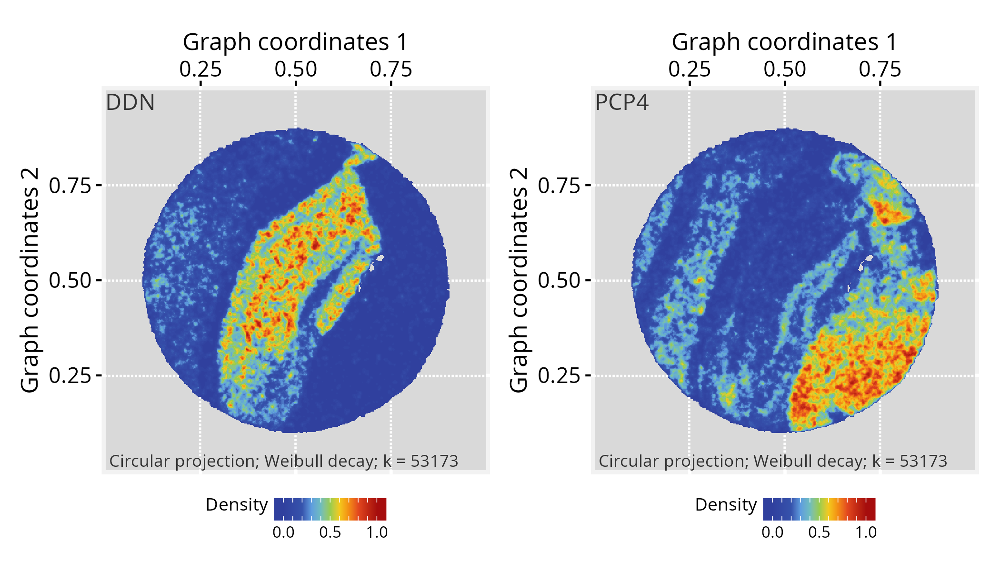
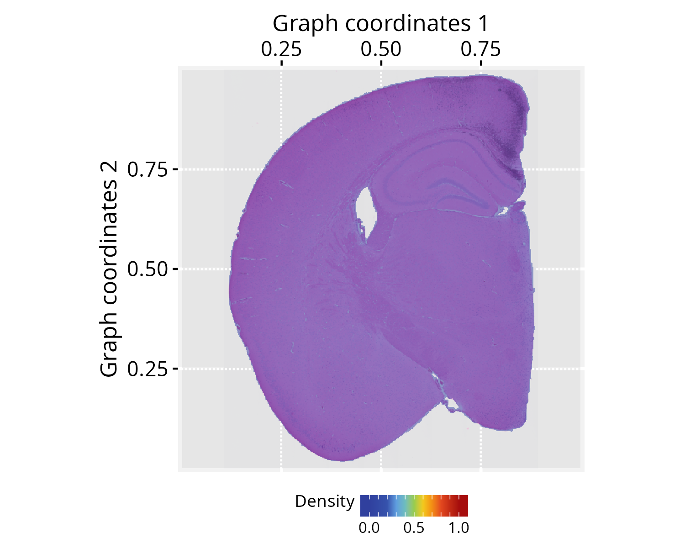
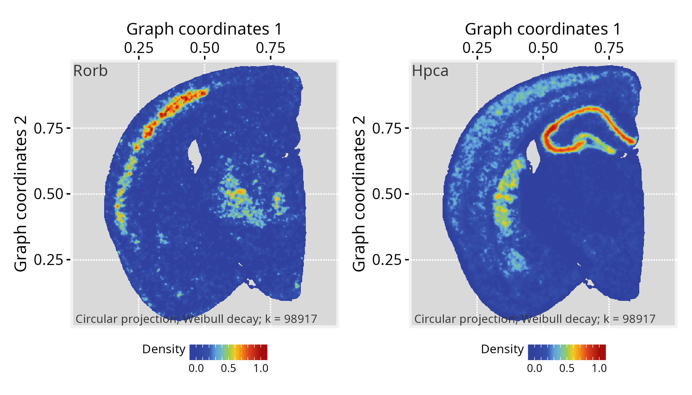

Visualizing spatial transcriptomics
Gene expression projections on spot coordinates
Sysbiolab Team
2026-05-18
Source:vignettes/articles/spatial-transcriptomics.Rmd
spatial-transcriptomics.RmdPackage: PathwaySpace 1.2.4
Overview
This vignette introduces PathwaySpace as an extension for the Seurat package (Hao et al. 2024), providing methods for signal propagation and visualization in spatial transcriptomics. It extends existing spatial analysis workflows to explore signal patterns in tissue microenvironments. In what follows, we present three step-by-step tutorials describing how to prepare input data for PathwaySpace. The results reproduce and refine examples featured in Seurat’s tutorials, so users are encouraged to see how these packages can be used together.
Before you start
This vignette assumes prior experience with Seurat (Hao et al. 2024), especially for handling spatial transcriptomics data.
Note: If you are new to Seurat’s spatial workflows, we recommend reviewing the spatial analysis tutorials before continuing.
Computational requirement:
Hardware: RAM >= 16 GB
Software: R (>=4.5) and RStudio
Required packages
# Check required packages for this vignette
if (!require("remotes", quietly = TRUE)){
install.packages("remotes")
}
if (!require("RGraphSpace", quietly = TRUE)){
remotes::install_github("sysbiolab/RGraphSpace")
}
if (!require("PathwaySpace", quietly = TRUE)){
remotes::install_github("sysbiolab/PathwaySpace")
}
if (!require("SeuratData", quietly = TRUE)){
remotes::install_github("satijalab/seurat-data")
}
if (!require("hdf5r", quietly = TRUE)){
install.packages("hdf5r")
}
if (!require("arrow", quietly = TRUE)){
install.packages("arrow")
}
# Check versions
if (packageVersion("RGraphSpace") < "1.2.0"){
message("Need to update 'RGraphSpace' for this vignette")
remotes::install_github("sysbiolab/RGraphSpace")
}
if (packageVersion("PathwaySpace") < "1.2.0"){
message("Need to update 'PathwaySpace' for this vignette")
remotes::install_github("sysbiolab/PathwaySpace")
}
if (packageVersion("Seurat") < "5.4.0.9009"){
message("Need to update 'Seurat' for this vignette")
remotes::install_github("satijalab/Seurat")
}
# Load packages
library(RGraphSpace)
library(PathwaySpace)
library(Seurat)
library(SeuratObject)
library(SeuratData)
library(patchwork)Visium v1 dataset
Setting input data
For this tutorial, we will use the stxBrain dataset from
the SeuratData package, consisting of spatial transcriptomics
data from sagittal mouse brain sections generated with Visium v1
technology. This dataset is commonly used to demonstrate Seurat
spatial workflows (Hao et al. 2024). Here,
we will preprocess it with Seurat and then extract the relevant
data for PathwaySpace downstream analyses.
## Install a Seurat dataset (this step is required only once)
SeuratData::InstallData("stxBrain")
# Check manifest of installed datasets
# SeuratData::InstalledData()
# Load the 'stxBrain' dataset
seurat_obj <- LoadData("stxBrain", type = "anterior1")The stxBrain dataset is normalized as suggested in
Seurat’s spatial_vignette, either using the
SCTransform() and NormalizeData()
functions.
# Run vst normalization on counts
# seurat_obj <- SCTransform(seurat_obj, assay = "Spatial", verbose = FALSE)
# NOTE: Seurat recommends using SCTransform() for processing this
# spatial dataset, which may require more computation time. Here,
# we use log-normalization for demonstration purposes.
seurat_obj <- NormalizeData(seurat_obj)… and then we extract spot coordinates, tissue image, and vst-normalized data.
# Get spot coordinates
spot_coord <- GetTissueCoordinates(seurat_obj, scale = "lowres")
# Get raster image
raster_image <- GetImage(seurat_obj, "raster")
# Get vst-normalized gene expression
vst_gexp <- GetAssayData(seurat_obj, layer="data")
# If needed, remove seurat_obj to free memory
rm(seurat_obj)Next, we create a PathwaySpace object from the spot coordinates and plot the resulting graph overlaid on the tissue image.
# Create a GraphSpace from 'spot_coord', mapped to the 'raster_image'
# Note: 'spot_coord' must contain 'x' and 'y' columns.
spot_coord$nodeSize <- 1 #making spots smaller for better visual inspection
gs <- GraphSpace(spot_coord)
# Normalization: by default, this attempts to align the graph's
# bottom-up coordinates with the image's top-down matrix layout.
gs <- normalizeGraphSpace(gs, image = raster_image)
# Check the overlay:
# In case of any misalignment, consider using 'flip.y = TRUE'
# in the normalizeGraphSpace() call above.
xy_labs <- labs(x="Spot coordinates 1", y="Spot coordinates 2")
plotGraphSpace(gs, add.image = TRUE) + xy_labs
Note on image alignment: Proper spatial alignment
between spot coordinates and the background image requires consistent
coordinate conventions. Spatial misalignment may occur when the input
spot coordinates and image follow origin placements or axis orientations
that differ from the package’s internal coordinate definitions (e.g.,
top-left versus bottom-left origins). To accommodate these differences,
normalizeGraphSpace() provides orientation controls through
the flip.* and rotate.* arguments. If the
spots appear misaligned with the input image, try alternative
combinations of these parameters to correct the alignment.
# Create a PathwaySpace object
pspace_obj <- buildPathwaySpace(gs)Running PathwaySpace
Before projection, we need to specify a distance unit for the signal decay function. This distance unit will affect the extent over which the convolution operation projects the signal, scaled to the coordinate space. We will use the center-to-center distance between spots, which represents 100 µm in the Visium v1 technology.
# Get distance to the nearest spot
nspot <- getNearestNode(pspace_obj)
pdist <- mean(nspot$dist) # average distance
# 'pdist' set as the average center-to-center distance between spots
pdist
# [1] 0.013As an optional step, the silhouetteMapping() function
generates an image mask that outlines the graph layout, over which the
subsequent methods will project a landscape image. The
baseline argument controls the level at which a silhouette
is sliced to form the mask. Increasing the baseline (in
[0,1]) produces a more detailed, granular silhouette.
# Add a graph silhouette to the PathwaySpace object
pspace_obj <- silhouetteMapping(pspace_obj, baseline = 0.1)
plotPathwaySpace(ps=pspace_obj, theme = "th3",
add.image = TRUE, si.alpha = 0.5) + xy_labs
Next, we specify the signal to be projected; for this demonstration,
we will use expression data from the Camk2n1 gene. The
vertexSignal() accessor function is then used to assign the
gene expression values to graph vertices.
# Select a gene of interest (e.g., Camk2n1) and assign its
# expression values to graph vertices
gene <- "Camk2n1"
vertexSignal(pspace_obj)[colnames(vst_gexp)] <- vst_gexp[gene,]We then perform the signal projection, setting
decay = 0.5. The decay parameter controls how the signal
attenuates as a function of distance in pathway space. With
decay = 0.5, the signal decreases to half of its initial
value at a distance equal to pdist (for additional
configuration details, see the modeling signal decay
tutorial).
# Project gene signal
pspace_obj <- circularProjection(pspace_obj, k = gs_vcount(pspace_obj),
decay.fun = weibullDecay(decay=0.5, pdist = pdist),
aggregate.fun = signalAggregation("wmean"))Because each spot produces an independent projection, the resulting projections are aggregated into a unified landscape. Here we use a weighted arithmetic mean, with each projection weighted by its own magnitude (for additional configuration details, see the signal aggregation rules tutorial).
Next, we show the results with minor variations to demonstrate some of the available plot settings.
# Plot tissue image and projection separated
p1 <- plotPathwaySpace(ps=pspace_obj, theme = "th3", title = gene)
p1$image <- p1$image + xy_labs
p1$graph <- p1$graph + xy_labs
p1$image + p1$graph
# Plot projections overlaid on the tissue image, with alpha = 0.25
p2 <- plotPathwaySpace(ps=pspace_obj, theme = "th3", title = gene,
add.image = TRUE, si.alpha = 0.25) + xy_labs
# Plot projections overlaid on the tissue image, with zlim truncated at >=0.5
p3 <- plotPathwaySpace(ps=pspace_obj, theme = "th3", title = gene,
add.image = TRUE, si.alpha = 0.25, zlim = c(0.5, 1)) + xy_labs
p2 + p3
Slide-seq v2 dataset
Setting input data
For this tutorial, we will use the ssHippo dataset
available from the SeuratData package, consisting of spatial
transcriptomics data from mouse hippocampus generated with
Slide-seq v2 technology. We will follow the same
general steps from our previous spatial tutorial, preprocessing with
Seurat and then extracting the relevant data for
PathwaySpace downstream analyses. For further details on this
dataset, see Seurat’s spatial_vignette.
## Install a Seurat dataset (this step is required only once)
SeuratData::InstallData("ssHippo")
# Check manifest of installed datasets
# SeuratData::InstalledData()
# Load the 'kidneyref' dataset
seurat_obj <- LoadData("ssHippo")
# Run vst normalization on counts
# seurat_obj <- SCTransform(seurat_obj, assay = "Spatial", verbose = FALSE)
# NOTE: Seurat recommends using SCTransform() for processing this
# spatial dataset, which may require more computation time. Here,
# we use log-normalization for demonstration purposes.
seurat_obj <- NormalizeData(seurat_obj)
# Extract spot coordinates and vst-normalized data
# Get spot coordinates
spot_coord <- GetTissueCoordinates(seurat_obj)
#Note: the `ssHippo` dataset does not include a tissue image
# Get vst-normalized gene expression
vst_gexp <- GetAssayData(seurat_obj, layer="data")
# If needed, remove seurat_obj to free memory
rm(seurat_obj)
# Create a PathwaySpace object from 'spot_coord'
# 'flip.y' and 'rotate.xy' to follow image orientation in Seurat's vignette
gs <- GraphSpace(spot_coord)
gs <- normalizeGraphSpace(gs, flip.y = TRUE, rotate.xy = TRUE)
pspace_obj <- buildPathwaySpace(gs)Running PathwaySpace
# Get distance to the nearest spot
nspot <- getNearestNode(pspace_obj)
pdist <- mean(nspot$dist) # average distance
# 'pdist' set as the average center-to-center distance between spots
pdist
# [1] 0.0024
# Add a graph silhouette to the PathwaySpace object
pspace_obj <- silhouetteMapping(pspace_obj, fill.cavity = FALSE,
pdist = max(nspot$dist))
# Check silhouette plot
xy_labs <- labs(x="Spot coordinates 1", y="Spot coordinates 2")
plotPathwaySpace(ps=pspace_obj, theme = "th3",
si.alpha = 0.5) + xy_labs
# Choose a gene of interest (e.g., DDN) and assign its
# expression values to graph vertices
gene <- "DDN"
vertexSignal(pspace_obj)[colnames(vst_gexp)] <- vst_gexp[gene,]
# Project gene signal
pspace_obj <- circularProjection(pspace_obj, k = gs_vcount(pspace_obj),
decay.fun = weibullDecay(decay=0.5, pdist = pdist))
# Plot projections
#-- as a suggestion, truncate zlim at the upper limit
#-- to enhance certain patters
p1 <- plotPathwaySpace(ps=pspace_obj, theme = "th3",
title = gene, zlim = c(0, 1)) + xy_labs
# ...another gene (e.g. PCP4)
gene <- "PCP4"
vertexSignal(pspace_obj)[colnames(vst_gexp)] <- vst_gexp[gene,]
# Project gene signal
pspace_obj <- circularProjection(pspace_obj, k = gs_vcount(pspace_obj),
decay.fun = weibullDecay(decay=0.5, pdist = pdist))
# Plot projections
p2 <- plotPathwaySpace(ps=pspace_obj, theme = "th3",
title = gene, zlim = c(0, 1)) + xy_labs
p1 + p2
Visium HD dataset
Setting input data
Here, we will use a higher-resolution spatial dataset from mouse brain generated with Visium HD technology. This platform provides whole-transcriptome gene expression data at a raw 2-µm resolution, with additional binned versions available at 8 and 16 µm. For this tutorial, we will use the 16-µm binned data. We will follow the same general steps from our previous spatial tutorials, preprocessing with Seurat and then extracting the relevant data for PathwaySpace downstream analyses. For additional details on this dataset, refer to Seurat’s visiumhd_analysis_vignette.
The Visium HD dataset can be downloaded from the 10x Genomics repository:
- Repository URL: https://www.10xgenomics.com/datasets
- Dataset: Visium HD Spatial Gene Expression Library, Mouse Brain (FFPE)
- Where to find it: Output and supplemental files
- Download: Binned outputs (all bin levels)
- File: Visium_HD_Mouse_Brain_binned_outputs.tar.gz
- MD5: 2e728d1c1bda99a36535ba45b4319a98
- Size: 4.62 GB
# Extract the tar.gz and set 'localdir' to the dataset folder
# Use 'bin.size' to choose the data resolution to load (2, 8, or 16 µm)
localdir <- "path/to/data/directory"
seurat_obj <- Load10X_Spatial(data.dir = localdir, bin.size = 16)
# Check default assay
Assays(seurat_obj)
# [1] "Spatial.016um"
# Run log-normalization for spatial data
seurat_obj <- NormalizeData(seurat_obj)
# Get spot coordinates
spot_coord <- GetTissueCoordinates(seurat_obj, scale = "lowres")
# Get raster image
raster_image <- GetImage(seurat_obj, "raster")
# Get normalized gene expression data
norm_gexp <- GetAssayData(seurat_obj, layer="data")
# If needed, remove seurat_obj to free memory
rm(seurat_obj)
# Create a PathwaySpace object from 'spot_coord', mapped to the 'raster_image'
gs <- GraphSpace(spot_coord)
gs <- normalizeGraphSpace(gs, image = raster_image)
pspace_obj <- buildPathwaySpace(gs, nrc = 700)Running PathwaySpace
# Get distance to the nearest spot
nspot <- getNearestNode(pspace_obj)
pdist <- mean(nspot$dist) # average distance
# 'pdist' set as the average center-to-center distance between spots
pdist
# [1] 0.0024
# Add a graph silhouette to the PathwaySpace object
pspace_obj <- silhouetteMapping(pspace_obj, fill.cavity = FALSE,
pdist = max(nspot$dist))
# Check silhouette plot
xy_labs <- labs(x="Spot coordinates 1", y="Spot coordinates 2")
plotPathwaySpace(ps=pspace_obj, theme = "th3",
add.image = TRUE, si.alpha = 0.5) + xy_labs
# Choose a gene of interest (e.g., Rorb) and assign its
# expression values to graph vertices
gene <- "Rorb"
vertexSignal(pspace_obj)[colnames(norm_gexp)] <- norm_gexp[gene,]
# Project gene signal
pspace_obj <- circularProjection(pspace_obj, k = gs_vcount(pspace_obj),
decay.fun = weibullDecay(decay=0.5, pdist = pdist))
# Plot projections
p1 <- plotPathwaySpace(ps=pspace_obj, theme = "th3",
title = gene, add.image = TRUE, zlim = c(0, 1)) + xy_labs
# ...another gene (e.g. Hpca)
gene <- "Hpca"
vertexSignal(pspace_obj)[colnames(norm_gexp)] <- norm_gexp[gene,]
# Project gene signal
pspace_obj <- circularProjection(pspace_obj, k = gs_vcount(pspace_obj),
decay.fun = weibullDecay(decay=0.5, pdist = pdist))
# Plot projections
p2 <- plotPathwaySpace(ps=pspace_obj, theme = "th3",
title = gene, add.image = TRUE, zlim = c(0, 1)) + xy_labs
p1 + p2
Citation
If you use PathwaySpace, please cite:
Tercan & Apolonio et al. Protocol for assessing distances in pathway space for classifier feature sets from machine learning methods. STAR Protocols 6(2):103681, 2025. https://doi.org/10.1016/j.xpro.2025.103681
Ellrott et al. Classification of non-TCGA cancer samples to TCGA molecular subtypes using compact feature sets. Cancer Cell 43(2):195-212.e11, 2025. https://doi.org/10.1016/j.ccell.2024.12.002
Session information
#> R version 4.6.0 (2026-04-24)
#> Platform: x86_64-pc-linux-gnu
#> Running under: Ubuntu 24.04.4 LTS
#>
#> Matrix products: default
#> BLAS: /usr/lib/x86_64-linux-gnu/openblas-pthread/libblas.so.3
#> LAPACK: /usr/lib/x86_64-linux-gnu/openblas-pthread/libopenblasp-r0.3.26.so; LAPACK version 3.12.0
#>
#> locale:
#> [1] LC_CTYPE=en_US.UTF-8 LC_NUMERIC=C
#> [3] LC_TIME=en_US.UTF-8 LC_COLLATE=en_US.UTF-8
#> [5] LC_MONETARY=en_US.UTF-8 LC_MESSAGES=en_US.UTF-8
#> [7] LC_PAPER=en_US.UTF-8 LC_NAME=C
#> [9] LC_ADDRESS=C LC_TELEPHONE=C
#> [11] LC_MEASUREMENT=en_US.UTF-8 LC_IDENTIFICATION=C
#>
#> time zone: America/Sao_Paulo
#> tzcode source: system (glibc)
#>
#> attached base packages:
#> [1] stats graphics grDevices utils datasets methods base
#>
#> other attached packages:
#> [1] patchwork_1.3.2 Seurat_5.5.0
#> [3] SeuratObject_5.4.0 sp_2.2-1
#> [5] arrow_24.0.0 hdf5r_1.3.12
#> [7] stxBrain.SeuratData_0.1.2 ssHippo.SeuratData_3.1.4
#> [9] SeuratData_0.2.2.9002 PathwaySpace_1.2.4
#> [11] RGraphSpace_1.2.4 ggplot2_4.0.3
#> [13] remotes_2.5.0
#>
#> loaded via a namespace (and not attached):
#> [1] RColorBrewer_1.1-3 rstudioapi_0.18.0 jsonlite_2.0.0
#> [4] magrittr_2.0.5 spatstat.utils_3.2-2 ggbeeswarm_0.7.3
#> [7] farver_2.1.2 rmarkdown_2.31 fs_2.1.0
#> [10] ragg_1.5.2 vctrs_0.7.3 ROCR_1.0-12
#> [13] spatstat.explore_3.8-0 htmltools_0.5.9 sass_0.4.10
#> [16] sctransform_0.4.3 parallelly_1.47.0 KernSmooth_2.23-26
#> [19] bslib_0.10.0 htmlwidgets_1.6.4 desc_1.4.3
#> [22] ica_1.0-3 fontawesome_0.5.3 plyr_1.8.9
#> [25] plotly_4.12.0 zoo_1.8-15 cachem_1.1.0
#> [28] igraph_2.3.1 mime_0.13 lifecycle_1.0.5
#> [31] pkgconfig_2.0.3 Matrix_1.7-5 R6_2.6.1
#> [34] fastmap_1.2.0 fitdistrplus_1.2-6 future_1.70.0
#> [37] shiny_1.13.0 digest_0.6.39 colorspace_2.1-2
#> [40] tensor_1.5.1 RSpectra_0.16-2 irlba_2.3.7
#> [43] textshaping_1.0.5 progressr_0.19.0 spatstat.sparse_3.1-0
#> [46] httr_1.4.8 polyclip_1.10-7 abind_1.4-8
#> [49] compiler_4.6.0 bit64_4.8.0 withr_3.0.2
#> [52] S7_0.2.2 fastDummies_1.7.6 MASS_7.3-65
#> [55] rappdirs_0.3.4 tools_4.6.0 vipor_0.4.7
#> [58] lmtest_0.9-40 otel_0.2.0 beeswarm_0.4.0
#> [61] httpuv_1.6.17 future.apply_1.20.2 goftest_1.2-3
#> [64] glue_1.8.1 nlme_3.1-169 promises_1.5.0
#> [67] grid_4.6.0 Rtsne_0.17 cluster_2.1.8.2
#> [70] reshape2_1.4.5 generics_0.1.4 gtable_0.3.6
#> [73] spatstat.data_3.1-9 tidyr_1.3.2 data.table_1.18.4
#> [76] tidygraph_1.3.1 spatstat.geom_3.7-3 RcppAnnoy_0.0.23
#> [79] ggrepel_0.9.8 RANN_2.6.2 pillar_1.11.1
#> [82] stringr_1.6.0 spam_2.11-3 RcppHNSW_0.6.0
#> [85] later_1.4.8 splines_4.6.0 dplyr_1.2.1
#> [88] lattice_0.22-9 bit_4.6.0 survival_3.8-6
#> [91] deldir_2.0-4 tidyselect_1.2.1 miniUI_0.1.2
#> [94] pbapply_1.7-4 knitr_1.51 gridExtra_2.3
#> [97] scattermore_1.2 xfun_0.57 matrixStats_1.5.0
#> [100] stringi_1.8.7 lazyeval_0.2.3 yaml_2.3.12
#> [103] evaluate_1.0.5 codetools_0.2-20 tibble_3.3.1
#> [106] cli_3.6.6 uwot_0.2.4 xtable_1.8-8
#> [109] reticulate_1.46.0 systemfonts_1.3.2 jquerylib_0.1.4
#> [112] Rcpp_1.1.1-1.1 globals_0.19.1 spatstat.random_3.4-5
#> [115] png_0.1-9 ggrastr_1.0.2 spatstat.univar_3.1-7
#> [118] parallel_4.6.0 assertthat_0.2.1 pkgdown_2.2.0
#> [121] dotCall64_1.2 listenv_0.10.1 viridisLite_0.4.3
#> [124] scales_1.4.0 ggridges_0.5.7 crayon_1.5.3
#> [127] purrr_1.2.2 rlang_1.2.0 cowplot_1.2.0